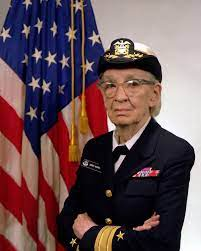
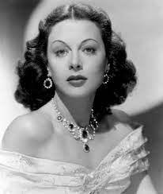

Grace Hopper
Amazing Grace, Développeuse du Premier Compilateur de Logiciel

1906 - 1992 (Wikipédia)
Lieutenant dans la marine américaine dans les années 40, Grace Hopper travaille ensuite pour le Computation Laboratory de Harvard. En 1951, elle développe le premier compilateur de logiciel « A-0 System ». Son équipe a ensuite le langage FLOW-MATIC, le premier permettant d’utiliser des mots anglais pour programmer. Avant ses inventions, les programmeurs devaient rédiger de longues instructions en binaires, elle a significativement simplifié et accéléré le processus. En 1959, elle contribue à la création du langage COBOL, notamment basé sur FLOW-MATIC, toujours employé aujourd’hui dans certains secteurs.
Heddy Lamarr
D'Actrice à Informatique
 (FranceInter)
1914 - 2000
À la différence d’Ada Lovelace et Grace Hopper, Hedy Lamarr était avant tout connue en tant qu’actrice hollywoodienne. Après une belle carrière en tant que telle dans les années 30, elle se concentre sur sa passion : l’innovation technologique, travaillant notamment sur l’aérodynamique des ailes d’avions pour le riche et passionné Howard Hugues. Durant la seconde guerre mondiale, elle co-conçoit le saut de fréquences. Ce système de communications radio permet de diffuser des messages plus compliqués à intercepter grâces à l’utilisation de différentes fréquences. D’abord utilisé pour l’armée, il mènera plus tard aux célèbres Bluetooth (dont le nom serait inspiré d’un viking aux dents bleues) et Wi-Fi.(Wikipédia)